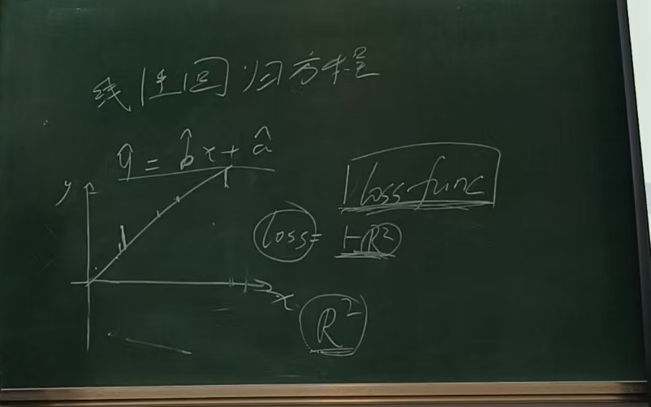
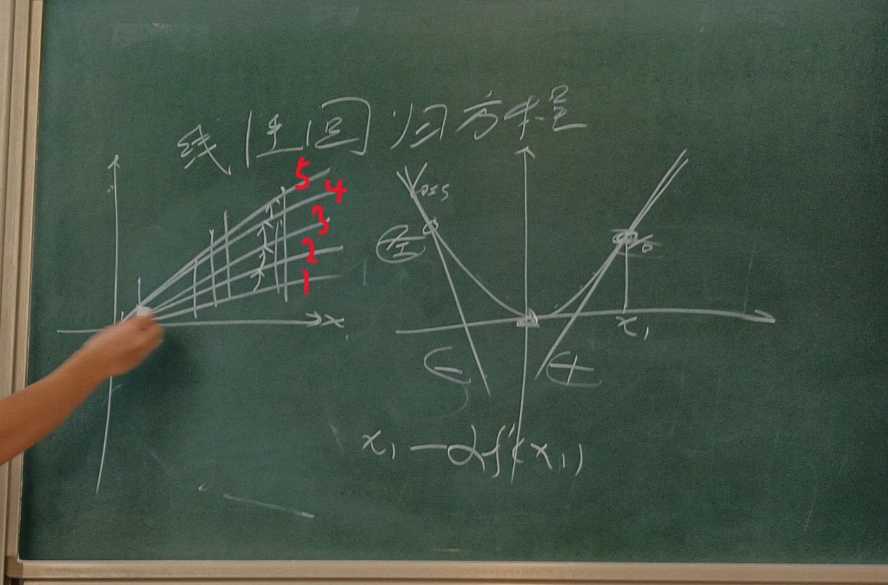
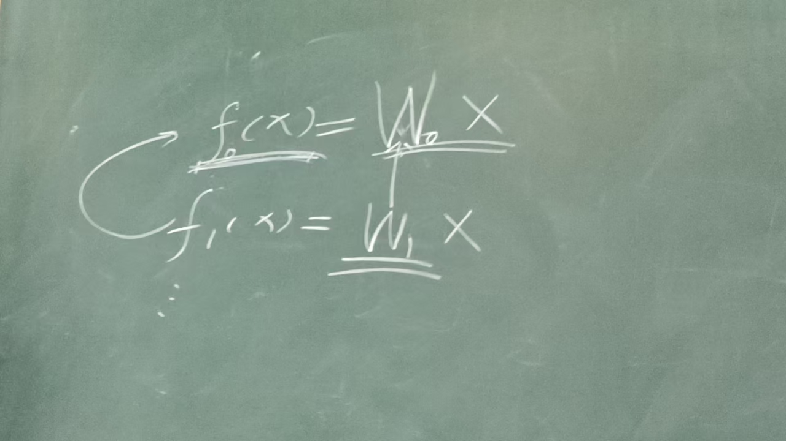
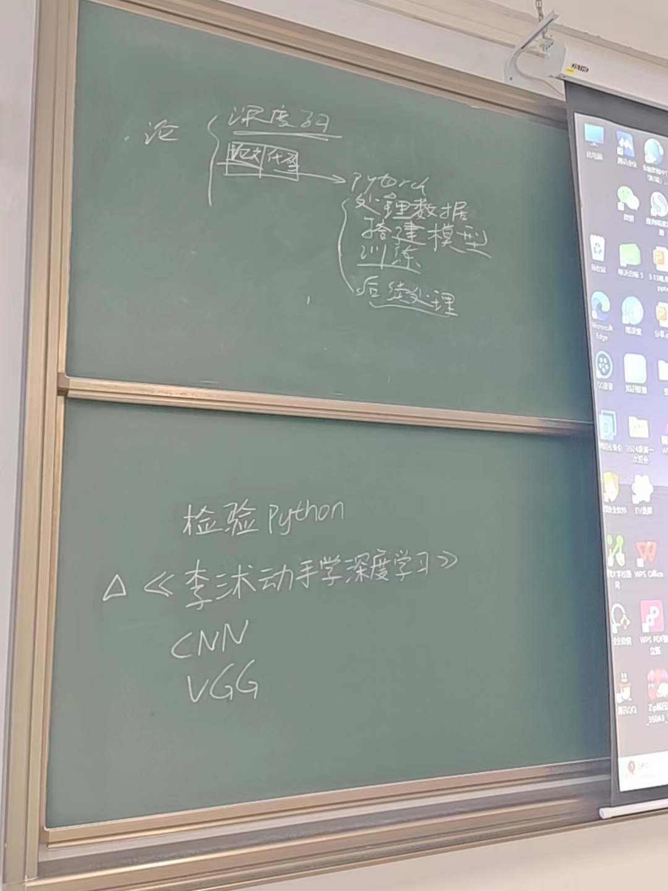

【总结】技术部第一次交流会
2024/10/20
深度学习导言
深度学习是当下最火的人工智能方法，在介绍深度学习之前，我们先回顾一下函数：
f(x)是一个函数，其将每一个自变量x映射为一个函数值y。但我们现在不要局限于曾经见到的函数，我们将x和y视为向量，即：x = (x1, x2, ..., xn)，y = (y1, y2, ..., yn)。例如：x = (x1, x2)，y = (y1, y2)，f(x) = (x1 * x2, x1 + x2)，则f(1, 2) = (2, 3)。这样我们就从一元函数扩展到了多元函数(多自变量函数)，且因变量也可能不止一维。
现在我们用高中学过的拟合线性回归方程来讲解深度学习的原理：
我们通过最小二乘法将许多离散的点拟合为了一条直线，而最小二乘法求解的原理是使每一个点的残差的平方和最小。
现在我们定义一个概念："损失函数"。损失函数用于描述误差的大小，例如在线性回归方程的拟合指标R^2越高表示直线的拟合程度越高，那么我们可以在这里定义一个损失函数loss = 1 - R^2，这样拟合程度越高，误差越小，loss越小；反之loss越大。

然而实际上我们的人工智能模型十分复杂，并不能通过公式使得loss最小，因此我们需要使用"训练"的方法来降低loss。现在让我们暂时忘掉线性回归方程的公式求解法，使用"训练"的方法来审视拟合线性回归方程。
如何"训练"呢？我们假设损失函数是十分简单的二次函数(此处只是举例，实际上的损失函数十分复杂，无法轻易找到最小值)：
我们看上图的右半部分，假设当前的参数(例如在线性回归方程中，参数就是y = bx + a中的b和a。实际上此处的横坐标代表参数空间，并不能真正意义上使用一维的x轴表示)在函数最小值的右侧，那么我们可以发现此时导数为正；反之导数为负，那么我们就可以根据导数的方向来更新参数，使得新的参数可以使loss更小。如此反复迭代，就可以接近loss的最小值。我们再看上图的左半部分，初始时我们随机选取a和b，假设此时直线为1，我们根据上述的方法更新a和b，使得loss变小，直线对应更新到了2的位置，不断重复，最终直线到达5的位置。这样我们就通过"训练"找到了我们拟合的直线。
从上述过程也可以看出，我们"训练"实际上更新的是函数本身，这一点不要搞混了，我们并没有更新过输入的数据！
现在我们来想一个图像分类的例子，假设我们需要一个模型，能够分类一张图片的内容属于"猫"还是"狗"，我们还是一样的流程，先准备数据(类似于上述问题中的离散的点)，此处数据为大量猫和狗的图片，以及图片对应的类别。然后随机初始化一组参数，其对应的函数(此处的函数也就是我们的"模型"，注意此处并不是上述的直线模型，其构造此处省略)为f0(X)，我们拿f0去计算损失函数(例如损失函数可定义为分类正确为0，分类错误为1，注意实际上并不会这样定义损失函数，此处是为了直观表示损失函数表达误差大小的作用)，然后进行"训练"，更新参数得到f1，不断重复，得到f2、...fn，最终其loss越来越小，这样我们输入一张图片，就能较为准确的给出分类结果了。

注：此处W代表参数，用Wx代表在该参数下，和输入x计算得到的函数值，并不代表函数是一次函数。上图二"f0(狗) = 猫"表示初始化的f0并不能准确进行分类，因此很可能会得到错误结果。而在充分训练后得到的fn，对于不同的自变量(图片)能够给出符合我们预期的函数值(分类)，不就是一个简单的"AI识图"了吗。
最后我们回想开头提到的多元函数，其实此处的f也是多元函数，其自变量是图片。计算机存储图片本质上是存储很多像素点，每个像素点用数值表示颜色。因此此处自变量其实就是很多的数值，而不是单单一个5或者8这样的数字。
编程
18号到20号之间提交的代码评价在此处给出，不再发送针对每个同学的压缩包，出现以下问题的同学以后请注意：
1. 提交格式为.py文件，请不要提交docx文件。
2. 遍历某一文件夹时，请使用os模块，不要直接遍历字符串。例如：
path = "D:\\JNU"
for i in path:
... # 省略
此时for循环遍历的是字符串，例如此处i会依次取值'D'、':'、'\'、...
而不是path对应的文件夹里的内容。
3. 不要用拼音命名，不知道某个词怎么翻译可以去查。
最后提一下出现的很普遍的代码风格问题。参考链接：https://ps2023-programming.github.io/start/code-style/。
一开始不知道怎么写就按照IDE的自动格式化的风格来写，每次格式化之后要和自己原本写的代码做对比，看看哪里写的不好。
规范的代码风格也有很多种，IDE的自动格式化也只是选取了其中一种，而且也不一定总是可靠，在一开始"完全不知道该怎么写才是规范的"这种情况下，可以多参考IDE的自动格式化风格，相信大家写代码多了之后也会有自己的理解。
学习计划

上半部分为论文复现组学习计划，下半部分为学习兴趣组学习计划。
论文复现组一开始先了解深度学习的一些基本概念，然后同时推进读论文和写代码两部分。论文部分要对一些经典模型的论文进行研读，学习知识的同时锻炼读论文能力；代码部分先碎片化地对使用模型的各个步骤进行练习，再完成一个完整的任务。